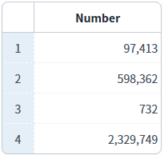
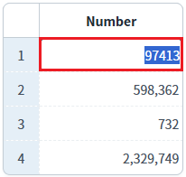
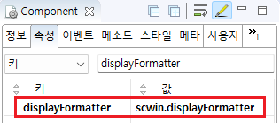

GridView 바디 컬럼의 'displayFormatter' 속성을 사용하여 화면에 표시되는 데이터를 가공하는 예제입니다. 'displayFormatter' 속성에 사용자가 정의한 메소드를 설정하면, 해당 메소드에서 반환한 값을 표시합니다. 이 방법을 사용하면 사용자가 데이터를 다양하고 복잡하게 가공할 수 있습니다.
GridView 바디 컬럼의 'displayFormat' 속성과 동시에 사용할 수 없습니다.
GridView의 바디 컬럼에 'displayFormatter' 속성 설정하기
GridView의 셀을 클릭하면 원본 데이터를 확인할 수 있습니다.
1
STEP 1: 초기 상태를 확인합니다.
GridView의 바디 컬럼에 displayFormatter가 적용된 상태를 확인합니다.
Image 1.브라우저(Chrome) 실행 예시

2
STEP 2: 셀을 클릭해서 원본 값을 확인합니다.
셀을 클릭하면 편집 모드로 변경되고, 원본 값을 확인할 수 있습니다.
Example 1.GridView 데이터
첫 번째 행의 데이터 - 화면 표시: 97,413 - 실제 값: 97413
Image 2.브라우저(Chrome) 실행 예시

1
STEP 1: displayFormatter 속성에 설정할 메소드를 정의합니다.
displayFormatter 메소드는 매개변수로 원본 데이터를 문자열로 받고 처리 결과 문자열을 반환해야합니다.
Example 2.Script
// GridView 바디 컬럼의 displayFormatter 속성에 설정할 메소드 scwin.displayFormatter = function (data) { // 로직을 구성하고 화면에 표시할 값을 반환합니다. return "화면에 표시할 값"; }
2
STEP 2: GridView 바디 컬럼의 displayFormatter 속성에 메소드명을 입력합니다.
Image 3.웹스퀘어 스튜디오의 Component View - 바디 컬럼 속성 설정 예시

[필수] displayFormatter="메소드 명"
displayFormatter로 설정할 메소드 명을 입력합니다.
설정 예시) 'scwin.displayFormatter' 메소드를 설정할 경우
displayFormatter="scwin.displayFormatter"
displayFormatter